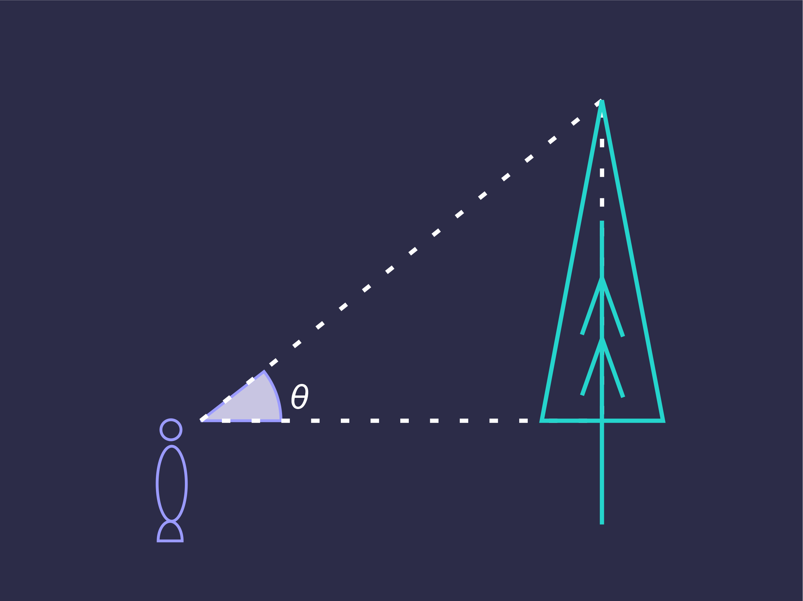
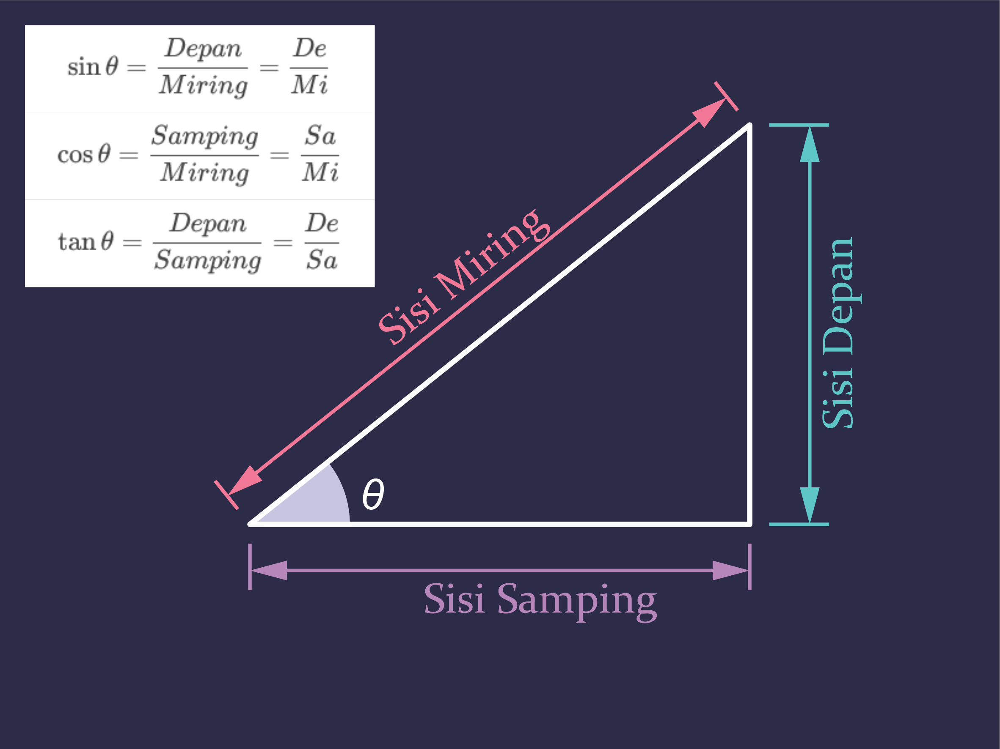

# Matematika Dasar - Silsilah Bilangan - Operasi Penjumlahan, Perkalian, Pemangkatan - Notasi Ilmiah, Polinomial, Notasi Akar - Grafik Fungsi Linear - Logaritma, Trigonometri --- ### Silsilah Bilangan | Kompleks | | | | | | | | ---- | --- | --- | ---- | --- | --- | --- | | Imajiner | Riil | | | | | | | | Irasional | Rasional | | | | | | | | Pecahan | Bulat | | | | | | | - + | - | Cacah | | | | | | | | Nol | Asli | | | | | | | |Ganjil | Genap | --- ### Operasi Penjumlahan | 1. Komutatif | `$$a+b=b+a$$` | | --- | --- | | 2. Asosiatif | `$$a+b+c=(a+b)+c$$` | | 3. Identitas | `$$a+0=a$$` | | 4. Inverse | `$$a+(-a)=0$$` | --- ### Operasi Perkalian | 1. Komutatif | `$$a \times b=b \times a$$` | | --- | --- | | 2. Asosiatif | `$$a \times b \times c=(a \times b) \times c$$` | | 3. Identitas | `$$a \times 1=a$$` | | 4. Resiproks | `$$a \times \frac 1 a=1$$` | --- ### Pemangkatan | `$$a \times a \times a=a^{3}$$` | | --- | | `$$\frac 1 a \times \frac 1 a \times \frac 1 a=a^{-3}$$` | | `$$a^{m} \times a^{n}=a^{m+n};(a^{m})^n =a^{mn}$$` | | `$$a^{0}=1$$` | --- ### Notasi Ilmiah `$$a \times 10^{b}; 1 \le a \lt 10$$` ### Harga Mutlak `$$\begin{split}|x|&=x;x \gt0\\&=-x;x \lt0\end{split}$$` --- `$$\begin{vmatrix}a \times b\end{vmatrix}= {\vert a \vert}\times{\vert b \vert}$$` `$$\begin{vmatrix}\dfrac a b\end{vmatrix}=\frac {\vert a \vert}{\vert b \vert}$$` `$$\begin{vmatrix}a^b\end{vmatrix}=a^b;a=2k;k \in\Z$$` `$$\vert -a \vert=\vert a \vert$$` --- ### Polinomial | `$$a_nx^n+a_{n-1}x^{n-1}+a_{n-2}x^{n-2}+...++a_{2}x^{2}+a_{1}x+a_{0}$$` | | --- | | `$$a_n...a_0=koefisien$$` | --- ### Notasi Akar | `$$\sqrt[n]{a};a=radikan;n=index$$` | | | --- | --- | | `$$\sqrt[n]{a}\times\sqrt[n]{b}=\sqrt[n]{a\times b}$$` | `$$\frac {\sqrt[n]{a}} {\sqrt[n]{b}}=\sqrt[n]{\frac a b}$$` | | `$$\sqrt[n]{a^m}=a^{\frac m n}$$` | | --- ### Grafik Fungsi Linear `$$y=mx+n$$` Data Hasil Percobaan Hukum Ohm | No. | V (Volt) | I (mA) | | --- | --- | --- | | 1 | 1 | 50 | | 2 | 2 | 102 | | 3 | 3 | 151 | | 4 | 4 | 201 | | 5 | 5 | 253 |
Hasil Percobaan Hukum Ohm
### Logaritma `$$\log_a b=c\implies a^c=b$$` `$$\log_{10} b=\log b$$` `$$\log_{10} 100=\log 100=2$$` --- `$$\log_{a} a^x=x$$` `$$\log_{a} (x\times y)=\log_{a}x+\log_{a}y \implies\log_{a} \frac x y=\log_{a}x-\log_{a}y$$` `$$\log_{a} x^p=p\times\log_{a} x\implies\frac{\log_{a}x}{\log_{a}y}=\log_{x}y$$` `$$\log_{a} a=1\implies\log_{a}1=0$$` --- ### Trigonometri  --- ### Trigonometri  --- #### Nilai sin, cos, dan tan sudut istimewa | | `$$0\degree$$` | `$$30\degree$$` | `$$45\degree$$` | `$$60\degree$$` | `$$90\degree$$` | | --- | --- | --- | --- | --- | --- | | `$$sin$$` | `$$0$$` | `$$\tfrac 1 2$$` | `$$\tfrac 1 2\sqrt2$$` | `$$\tfrac 1 2\sqrt3$$` | `$$1$$` | | `$$cos$$` | `$$1$$` | `$$\tfrac 1 2\sqrt3$$` | `$$\tfrac 1 2\sqrt2$$` | `$$\tfrac 1 2$$` | `$$0$$` | | `$$tan$$` | `$$0$$` | `$$\tfrac 1 3\sqrt3$$` | `$$1$$` | `$$\sqrt3$$` | `$$\infty$$`|